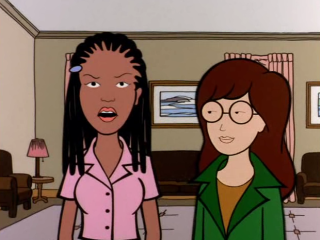

Episode Guide
Episode Guide
|  |
Gifted Episode #208 - June 29, 1998 Written by Peggy Nicoll Song List Entries For This Episode Oops! List Entries For This Episode Transcript For This Episode |
|
Previous "The New Kid" (#207) |
Next "Ill" (#209) |
|
Cast |
|---|
|
Regular:
Daria,
Quinn,
Helen,
Jake,
Jane,
Trent,
Brittany,
Jodie,
Sandi,
Stacy,
Tiffany,
Ms. Barch,
Ms. Li
Guest: Andrew Landon, Michele Landon, Linda Griffin, Sam Griffin, Chris Griffin, Marina, Lara, Graham, Cassidy, SSW Reporter Non-Speaking: Kevin, Mack |
|
Plot |
|
Summary:
Daria and Jodie visit the exclusive Grove Hills school for academically gifted students, which proves to be disillusioning on many levels. Quinn, meanwhile, is forced to stay at Jane's house when she overstays her welcome with her Fashion Club friends. |
|
Interesting Tidbits |
Continuity:
|
|
Memorable Quotes |
|
Brittany - The Telltale Heart? I love romance novels! Daria - Yeah, nothing says "be mine" like a pounding heart beneath a floorboard. Jake - Hey, Mom told me about Grove Hills. That's great, kiddo! Daria - Yeah. I'm tired of being at a school where the kids just think they're cooler than me. I want to go to one where they think they're smarter than me also. Helen - We're going to Grove Hills this weekend. Quinn - That place where they fence in all the geeks? Why do I have to go? That's not fair! Helen - Quinn, I'm afraid siblings aren't invited. You're staying home. Quinn - You mean the whole family gets to go without me? That's not fair! Jodie - Thanks for the ride. My parents will meet us up there after the new members' brunch at their club. My father's been on the waiting list for three years. Daria - Remember, no matter what happens on this ride you've already waived your right to sue me for confining you with lunatics. Jake - Daria, why aren't you on the tennis team? Daria - Because it's classified as a sport. Helen - Speaking of sports, Jodie, do you know Kevin Thompson? He and Daria did a science project together. Jodie - Oh, sure. Kevin's great... (softly to Daria) ...at smashing beer cans with his head. Helen - I don't know why Daria doesn't hang around with him and his gang more. Daria - For the same reason I don't sleep with my head packed in ice. Narrator - At Grove Hills, you can contemplate Proust in our spacious dorm rooms, converse in Latin over a delicious meal... Daria - (whispers) Dump bodies into the river from our scenic bell tower. Marina - Daria? What about your goal? Daria - Um, I don't have any. Marina - Oh, come, Daria. You must have some goal. Daria - My goal is not to wake up at 40 with the bitter realization that I've wasted my life in a job I hate because I was forced to decide on a career in my teens. Jake - Maybe I could talk Helen into having a boy. Helen - Maybe I could talk you into letting me keep the house. Graham - Our happiest years will begin when we make our first million. I can't wait to stroll down the Riviera with a model on each arm. Daria - Gee, that's interesting. I guess you can be intellectually gifted and still be morally bankrupt. Daria - Thank God for standardized tests. Otherwise you'd never know who your real friends are. Jodie - Hey! Just because some jock made you feel like the loser you are, don't take it out on me. Graham - I'm not a loser! I have a 165 I.Q.! Jodie - Who cares? You're still boring and miserable! Try taking your head out of your butt for once and opening up your myopic little eyes. Or doesn't your 165 I.Q. make you smart enough to see the way you really are? (leaves) Graham - I'll make sure you never set foot in this school again! Daria - That's a relief. For a minute there I thought you were going to threaten us. (leaves) Daria - Look, Jodie, I'm too smart and too sensitive to live in a world like ours at a time like this with a sister like mine. Maybe I do miss out on stuff, but this attitude is what works for me now. Jodie - Then you'll understand what works for me now. At home, I'm Jodie. I can say or do whatever feels right. But at school, I'm the Queen of the Negroes. The perfect African-American teen. The role model for all of the other African-American teens at Lawndale. Oops! Where'd they go? Believe me, I'd like to be more like you. Jodie - So, Lawndale or Grove Hills? Daria - I'm sticking with Lawndale. If I came here, I'd end up poisoning the sloppy joe mix. Jodie - Yeah, you're right. I'm pushed to the breaking point being Miss Model Student at Lawndale. A year here might kill me. (Quinn walks up the street, pushed by Jane) Quinn - And then the other thing is, who came up with the name "tennis bracelet" anyway? It sounds like some kind of a sweatband, if you ask me. You know what I'd name them? Wrist ornaments. It's like a tree ornament, only for your wrist. Doesn't that sound festive? Jake - (frazzled) Take... her... now. Daria - This story I've gotta hear. |
|
Mike Quinn's Delayed Reaction Review |
|
Character Development??
There appears to be some character development in this episode. Jodie seems to have become more of a best friend to Daria now. Daria and Jodie seemed to have found some common ground or at least some mutual understanding of how each other operates. It seems that Grove Hills can bring out the best in some people. Quinn also is growing, too, which is more surprising. She seems to be fed up with the whole fashion club scene and is smart enough to go to someone smart (Jane, in this case) when she needs help. |